MCP
Model Context Protocol — a server exposing tools/resources over a standard interface. Loaded whole, every turn.
🎤 Meetup Talk · 30 min
Spending your AI budget like an engineer, not a tourist.
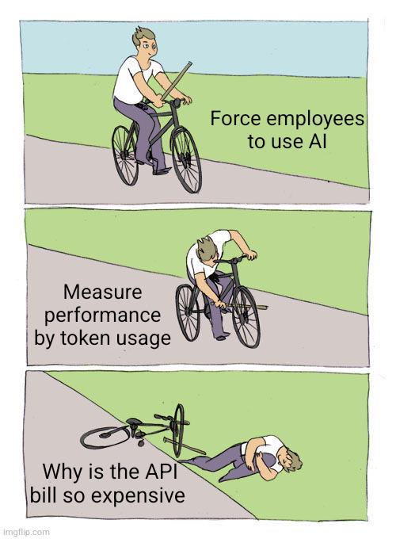
🙋 About me
8+ years as a software engineer, 3 of them spent living inside AI agent workflows day to day — the same daily grind most of you already know.
Right now that's 100M+ tokens/day across coding, architecture reviews, incident ops, and story/spec writing — enough volume that "just add more context" stopped being free a long time ago.
 Claude Certified Architect
Claude Certified Architect AWS Generative AI Developer
AWS Generative AI Developer🧩 Aligning definitions, not teaching them
Model Context Protocol — a server exposing tools/resources over a standard interface. Loaded whole, every turn.
Packaged, on-demand instructions the agent loads only when a task matches — pointer first, body on demand.
The runtime/loop (CLI, IDE ext., cloud agent) that turns a raw model into an actor with tools and memory.
Pre/post tool-call interception — filter, block, or rewrite behavior before it costs you a turn.
Deliberately curating what enters the context window — the discipline behind every tip tonight.
Reusing a stable prefix so repeated context is billed once, not re-sent every single turn.
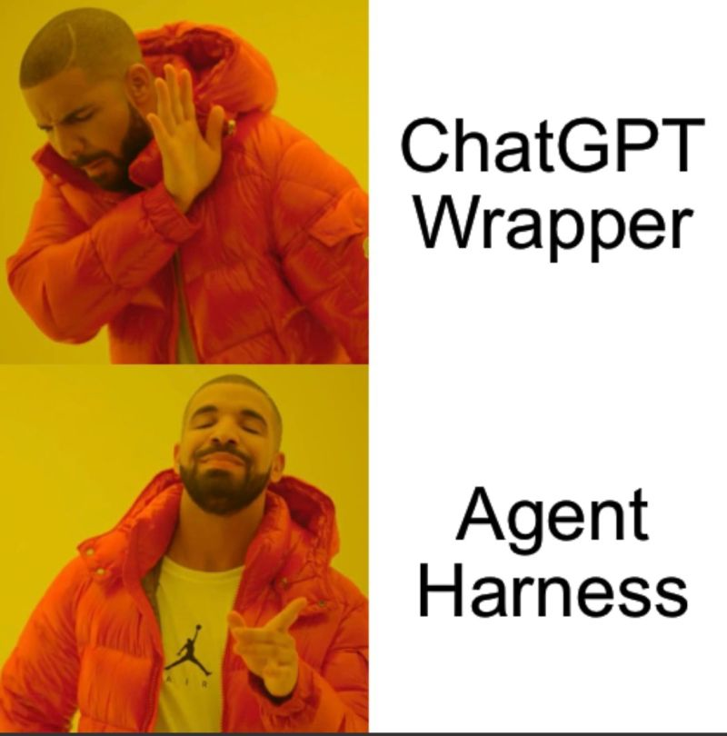
Tonight's playbook — five stops from picking a model to deciding when not to use one.
01 · Model selection
| Tier | Anthropic | OpenAI | Best for |
|---|---|---|---|
| Cheap $ | Haiku | GPT-5.6 Luna | Mechanical edits, formatting, triage — or budget mode at high reasoning |
| Mid $$ | Sonnet | GPT-5.6 Terra | Day-to-day implementation, well-specified features |
| Frontier $$$ | Opus / Fable | GPT-5.6 Sol | Genuinely ambiguous architecture, hard debugging — when budget allows |
The habit trap: reaching for the frontier model out of habit, for a task the cheap tier finishes in 2 seconds.
02 · Measure effectiveness, not vibes
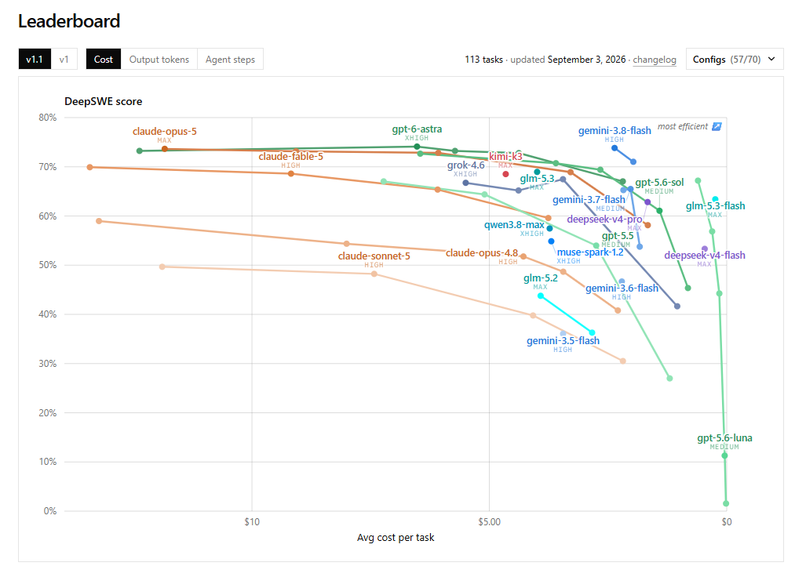
DeepSWE leaderboard — score (%) vs. avg. cost per task, 113 tasks, 57 model/effort configs.
Each dot is one model/reasoning-effort config, plotted by score achieved vs. $ spent per task. Reading it left-to-right past the knee shows which configs burn budget for marginal score gains.
03 · Token-reduction playbook
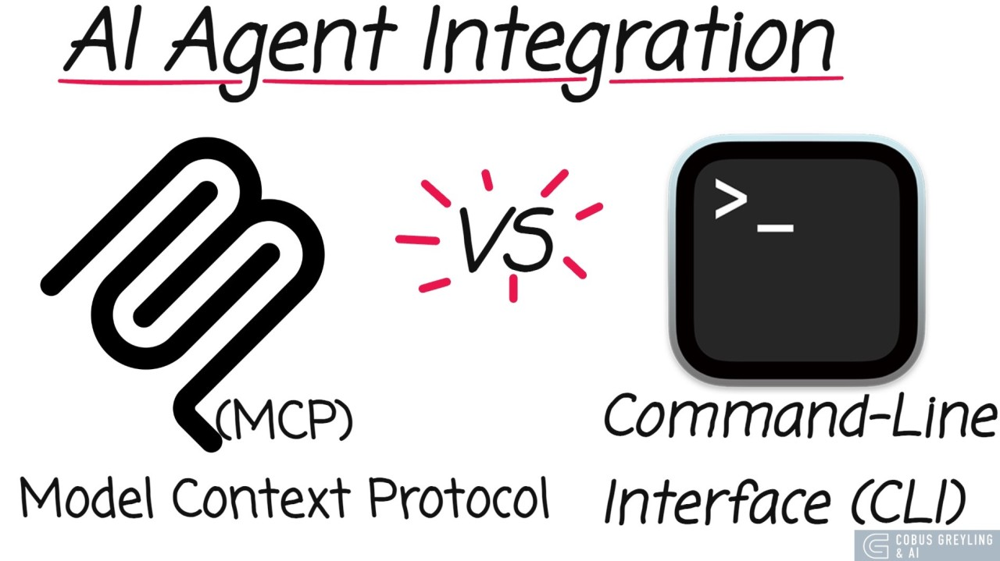
Same job, two integration shapes: an MCP server exposes every tool schema up front and pays for it every turn, a CLI is read once and then just called — the benchmark below is what that difference costs in practice.
| Interface | Input tokens | Cost/task | Turns | Success |
|---|---|---|---|---|
| 🏆 gh-axi (agent-tuned CLI) | 46,462 | $0.050 | 3 | 100% |
| gh CLI (raw) | 47,076 | $0.054 | 3 | 86% |
| GitHub MCP (code exec) | 137,409 | $0.101 | 7 | 84% |
| GitHub MCP + ToolSearch | 153,621 | $0.147 | 8 | 82% |
| GitHub MCP (eager schemas) | 175,757 | $0.148 | 6 | 87% |
17 real GitHub tasks × 5 repeats, same model, LLM-judged success. CLI wins tokens, cost, and success rate.
MCP schemas are loaded into context on every turn, whether the turn uses them or not. A CLI's help text is read once, then the agent just calls it.
"axi" (Agent eXperience Interface) CLIs like gh-axi and chrome-devtools-axi wrap existing CLIs with agent-tuned output — still early, but already usable in production harnesses.
03 · Token-reduction playbook
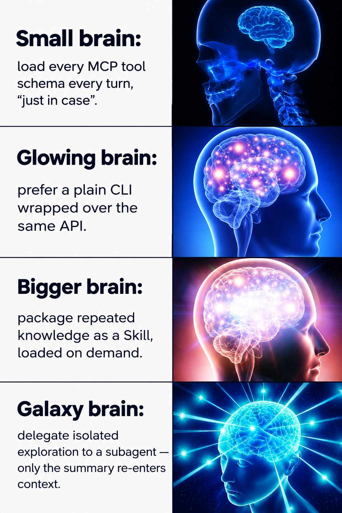
Always-loaded schemas. Cost paid every turn, used or not.
Static instructions baked in, relevant or not.
Loaded only on match — pointer first, full text on demand.
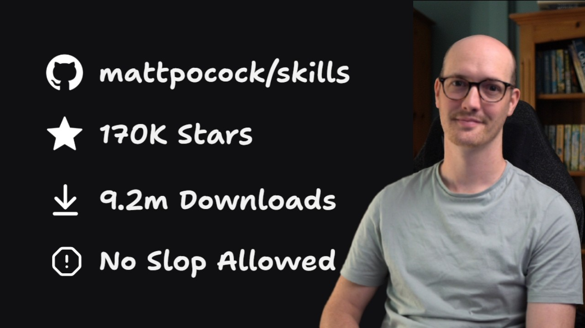
One of the most popular open Skill packs right now: 170K★, 9.2M downloads. grill-me cross-examines your plan/PR before you ship it; improve-codebase-architecture audits a repo for deep-module violations and proposes a concrete refactor.
03 · Token-reduction playbook
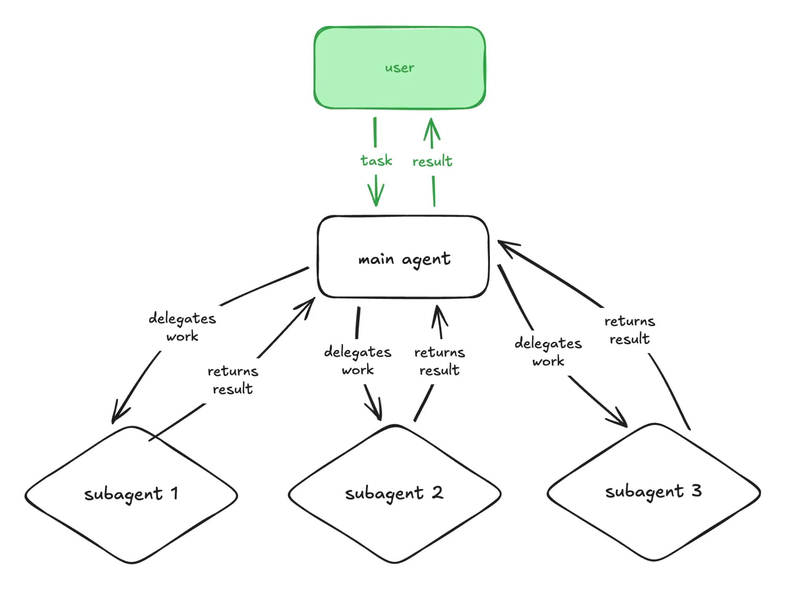
Each subagent gets its own context window — 50 files read, 30 commands run, two failed attempts — none of that noise reaches the parent. Only the final result crosses back.
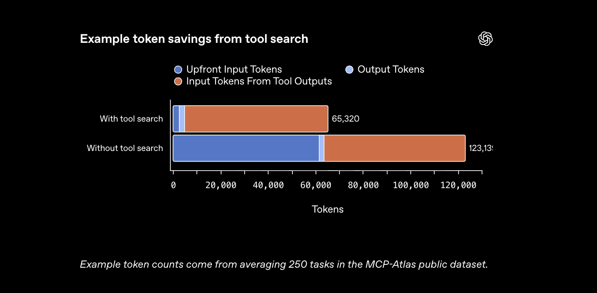
Instead of loading every MCP schema up front, the agent searches a tool index and pulls in only the schema it needs. Cuts the eager-load tax (175,757 → 153,621 tokens/task, slide 6) — better than nothing, still short of a CLI's 46,462.
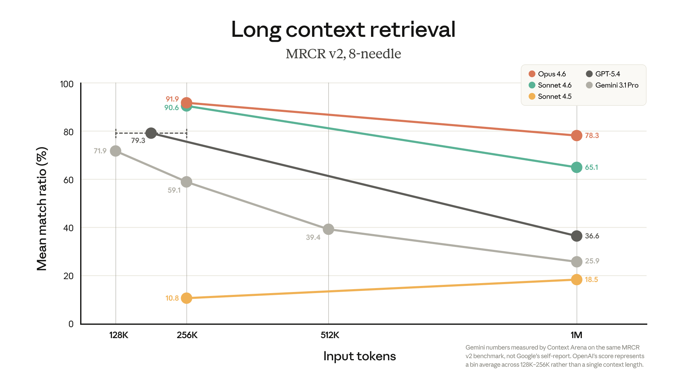
03 · Token-reduction playbook
Missing grep/ls/find costs extra failed calls before PowerShell fallback.winget install Microsoft.Coreutils
Fast, agent-friendly search output.winget install BurntSushi.ripgrep
A local CLI proxy that rewrites verbose shell output (git, test runners, package managers, k8s) into a lean equivalent before the agent ever sees it. Runs transparently in front of your normal shell — no change to how you invoke commands, only to what reaches the model's context.
rtk gain shows savings historyrtk lint eslint 99.9% saved, rtk diff 99.8%, rtk dotnet test 74–82%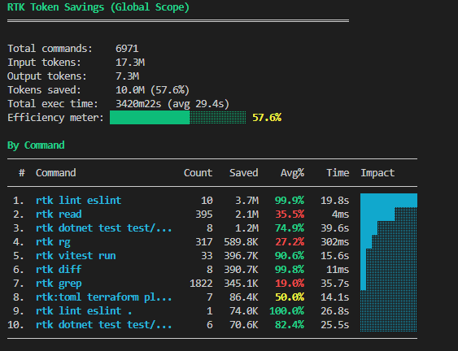
03 · Token-reduction playbook
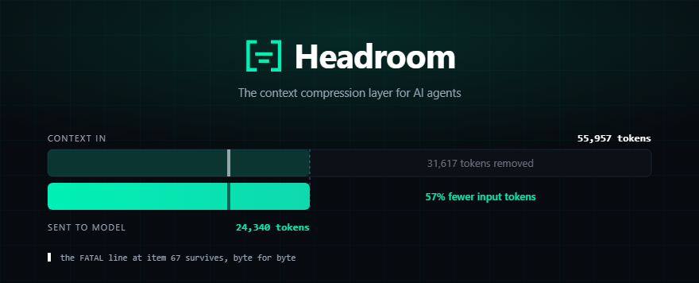
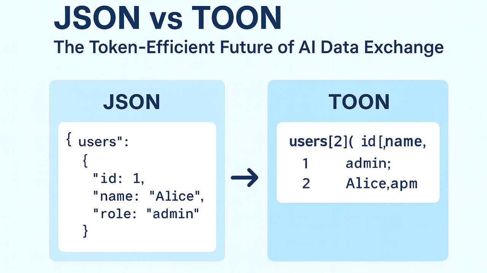
A generated lockfile or huge package.json re-encoded from JSON to TOON-style rows removes repeated "key": punctuation per entry — the exact same dependency data, a fraction of the tokens.
Accuracy held flat on GSM8K/TruthfulQA/SQuAD/BFCL in Headroom's own evals — compression, not summarization; nothing is guessed.
03 · Token-reduction playbook
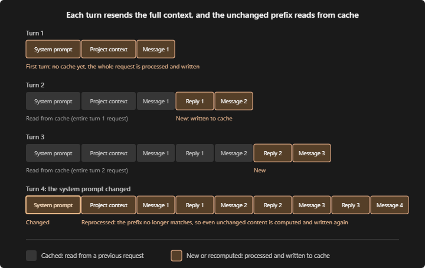
Cache hits are billed far cheaper than fresh input tokens — but the cache is fragile. Two habits quietly destroy it:
| Provider | Default TTL | Extended TTL | Cache write | Cache read |
|---|---|---|---|---|
| Anthropic Claude | 5 min | 1 hr (paid) | 1.25× (5 min) / 2.0× (1 hr) | 0.10× — 90% off |
| OpenAI | ~5–10 min | ≤ 1 hr | no premium — automatic | 0.10× — 90% off |
| Gemini | ~10 min (proxy-level) | — | varies by proxy | discounted, provider-set |
A 50K-token system prompt/repo-context reused 20 times in one session, 5-min TTL:
04 · Observability
Watch context % and cache-hit ratio. When it climbs, /compact, checkpoint, or start a new task — a bigger window ≠ a healthier session.
Watch tokens/cost per minute. A spike means stop watching it "think harder" and inspect what actually changed — exploration and tool loops compound fast.
Same tool called repeatedly, same file reread, same command failing — that's a signal to intervene manually. Three failed attempts need a new strategy, not a fourth prompt.
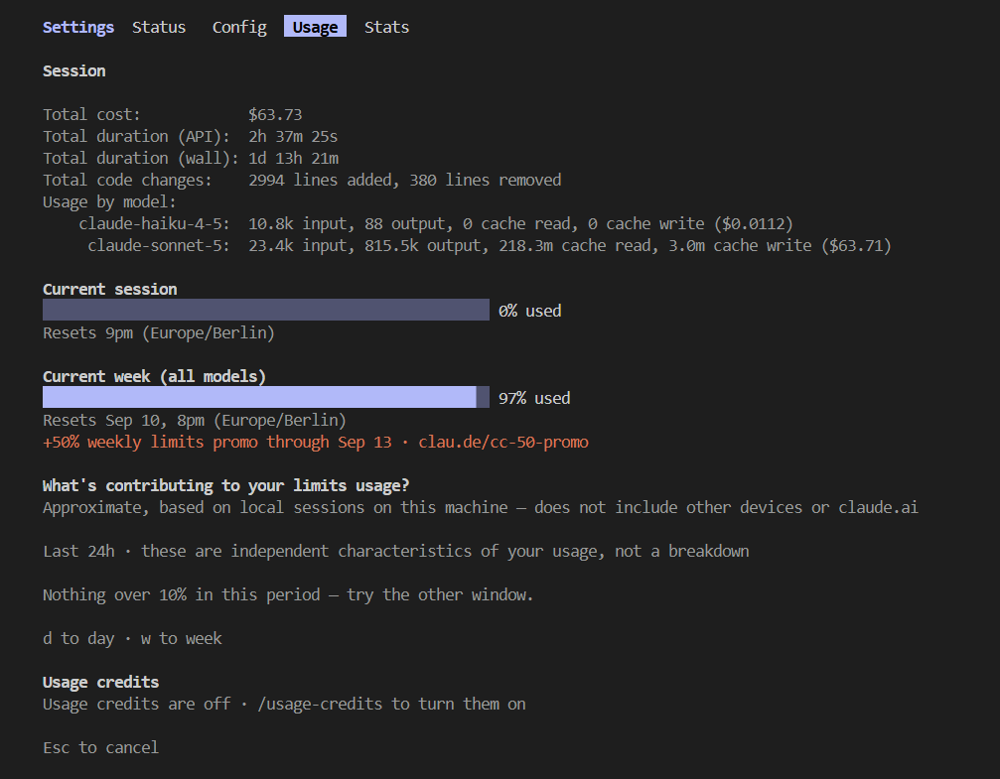
Claude Code's /usage and a custom statusline put model, context %, cache ratio, and session cost in front of you while you work — no dashboard to open. Community statuslines add burn-rate and RTK savings too.
04 · Observability
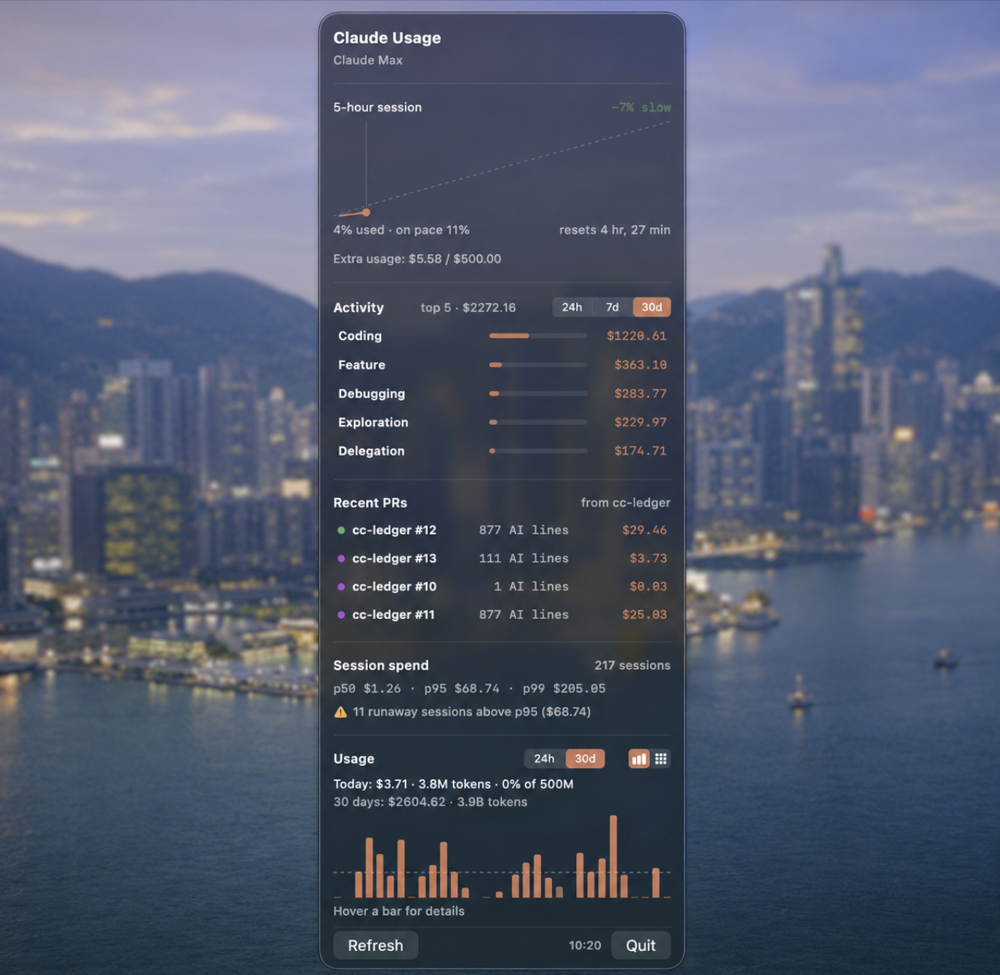
Hooks record every prompt/edit locally to SQLite, then roll it up per PR: cost, AI-line count, category split (coding vs. exploration vs. retries), and runaway-session detection (p50/p95/p99 spend). Young project, few stars — treat it as proof the idea works, not an established tool.
Claude Code and other harnesses already export tokens, cost, commit.count, and pull_request.count via OpenTelemetry — enough to pipe into Langfuse, Grafana, or your own collector and tag by git branch/PR# yourself.
One local ledger across Claude Code, Codex, and other coding agents: daily/per-model token & cost breakdown, peak context, session history — a good starting point if you'd rather adopt than build.
05 · AI vs. doing it yourself
Illustrative splits, not measured percentages — the real ratio depends on the task and your own domain expertise.
Most of the gap between median and heavy spenders isn't "more work done" — it's unsupervised agent loops multiplying context overhead. A bigger token budget doesn't fix a bad task-routing decision; it just delays noticing it.
🙏 Thanks
| Tool / source | What it's for | Link |
|---|---|---|
| gh-axi | Agent-tuned CLI wrapper, CLI-vs-MCP benchmark | github.com/kunchenguid/gh-axi |
| Microsoft coreutils | Native grep/ls/find for Windows agents | github.com/microsoft/coreutils |
| ripgrep | Fast, agent-friendly search output | github.com/BurntSushi/ripgrep |
| RTK | Shell-output compression proxy, savings history | github.com/rtk-ai/rtk |
| Headroom | Wire-layer compression for tool output, logs, files, RAG | github.com/headroomlabs-ai/headroom |
| DeepSWE | Contamination-free, cost-aware SWE benchmark | deepswe.datacurve.ai |
| Langfuse / Helicone | Per-session/user LLM cost & trace observability | langfuse.com · helicone.ai |
| Claude Code statusline | Ambient context %, cache ratio, cost — while you work | aihero.dev |
| cc-ledger | Demo: local per-PR cost/attribution from hooks | github.com/delta-hq/cc-ledger |
| agentsview | Cross-agent local usage ledger (Claude Code, Codex, ...) | github.com/kenn-io/agentsview |